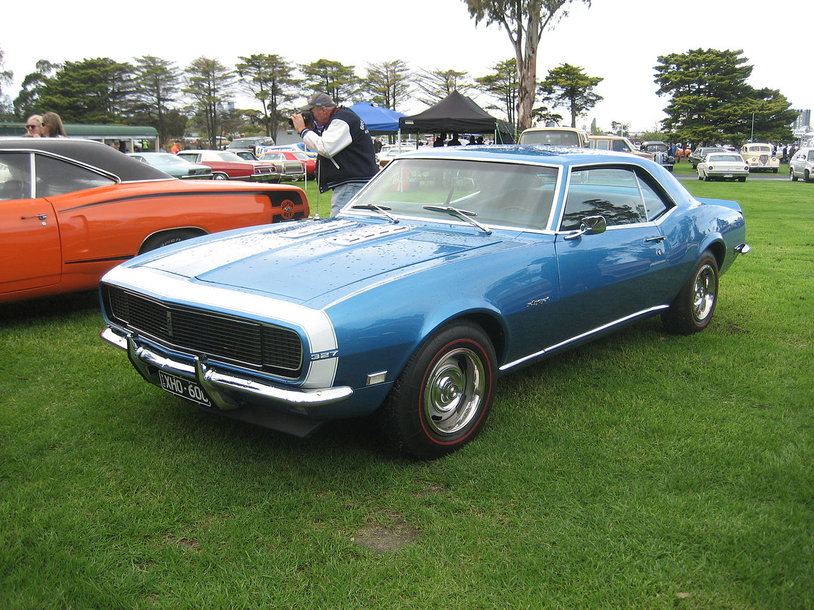

A década de 1970 não foi proveitosa para o Camaro: a subida do preço do petróleo fez o consumidor optar por veículos que consumiam menos. Medidas antipoluição fizeram acabar com os grandes V8 e em 1972 o fim da produção do SS e em 1973 o surgimento do Camaro LT privilegiando mais o luxo e o conforto e menos a potência, dando lugar inclusive aos motores 6 cilindros em linha, menos potentes e mais econômicos. A crise faz outra "vítima" em 74, terminando com o Z28.
 link para o Google